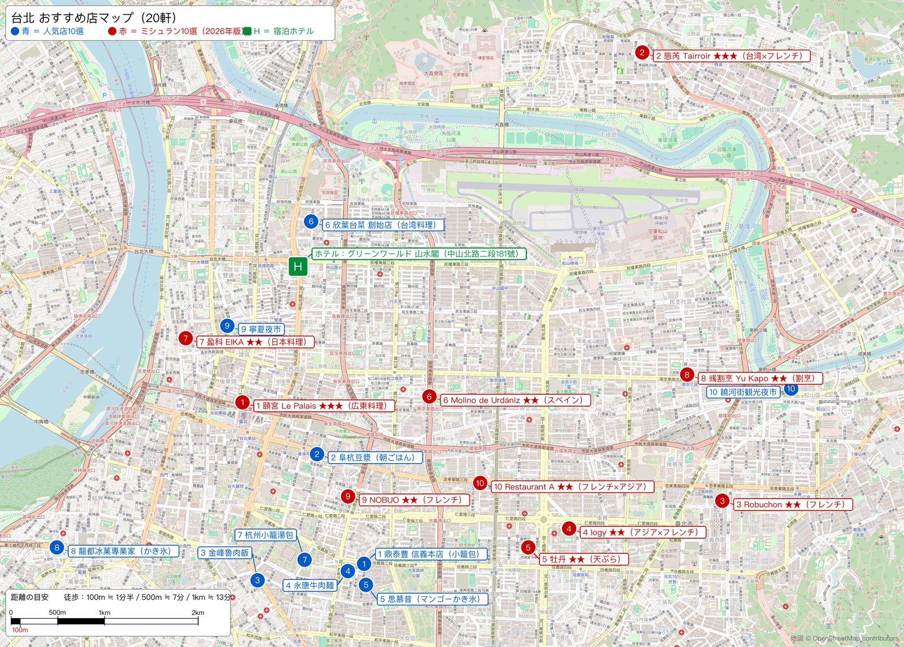

1
鼎泰豊 信義本店
小籠包
小籠包、蟹みそ小籠包、酸辣湯。世界一有名な小籠包店
- 最寄り駅
- 東門駅
- 住所
- 台北市大安區信義路二段194號
- 相場（1人）
- 500〜800元 約2,500〜3,900円
小籠包10個280元＋一品・スープで1人500〜800元 - メモ
- 信義本店は現在テイクアウト専門。店内で食べるなら隣の新生店へ
人気店10軒。1元＝4.9円で換算（2026年9月中旬）、日本円は百円単位。ボタンをタップで店のページとGoogleマップが開きます。

青＝この10軒（番号は下のカードと同じ）／赤＝ミシュラン店／緑H＝宿泊ホテル（グリーンワールド 山水閣）。タップで拡大。
小籠包
小籠包、蟹みそ小籠包、酸辣湯。世界一有名な小籠包店
台湾式朝ごはん
鹹豆漿（塩味の豆乳スープ）と厚餅（焼きパン）
魯肉飯（豚バラ煮込みかけご飯）
魯肉飯と排骨湯（スペアリブスープ）
牛肉麺（台湾のラーメン）
紅焼牛肉麺（醤油辛口）と粉蒸排骨
マンゴーかき氷
新鮮マンゴーかき氷
台湾料理レストラン（座って食べる高級寄り）
豚レバー炒め、カラスミ、杏仁豆腐
小籠包（庶民派）
小籠湯包と蟹黄湯包。鼎泰豊の半額くらい
かき氷・豆花（台湾スイーツ）
八宝冰（小豆・タロイモ・白玉など8種のせ氷）
夜市（屋台街・食べ物中心）
劉芋仔の芋頭球、方家の鶏肉飯、豬肝湯
夜市（屋台街・600mの通り）
福州世祖胡椒餅、薬燉排骨